Aucune caméra
Il n’existe aucune image à pirater, à stocker ou à effacer.
Offre de lancement · Kit Famille à −15 % Fin dans — j — h — min
Découvrir l’offreSérénid Nid · Sécurité domestique douce
Le Nid perçoit où se trouve votre enfant, sans caméra ni micro, et ne verrouille que les zones sensibles lorsqu’il s’en approche. Le reste de la maison reste à lui.
Comment ça marche
Un radar 60 GHz mesure position et mouvement. Aucune image, aucun son : seulement un point.
Le placard sous l’évier se verrouille au moment où votre enfant arrive, puis s’ouvre à nouveau quand il s’éloigne.
Les adultes circulent sans rien déverrouiller. Le coffre à jouets, lui, n’est jamais fermé.
Application, montre ou Clé Sérénid : chacun ouvre en un geste, même sans téléphone.
Sérénid complète la vigilance des parents, il ne la remplace pas.
Le kit Sérénid
Tout fonctionne ensemble dès la sortie de la boîte. Posez, appairez, dessinez vos zones : comptez une vingtaine de minutes pour une première pièce.
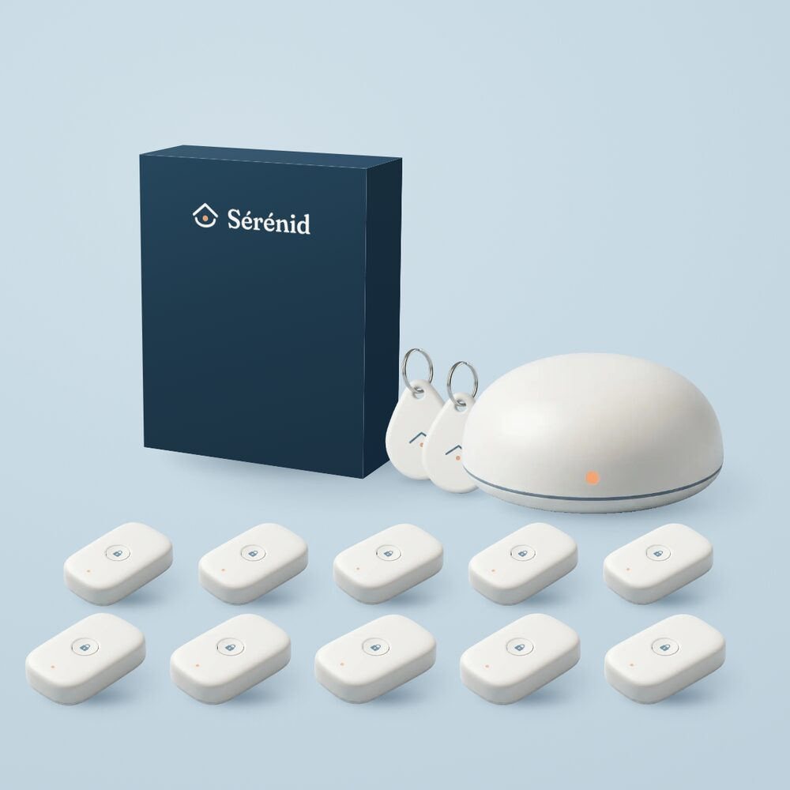
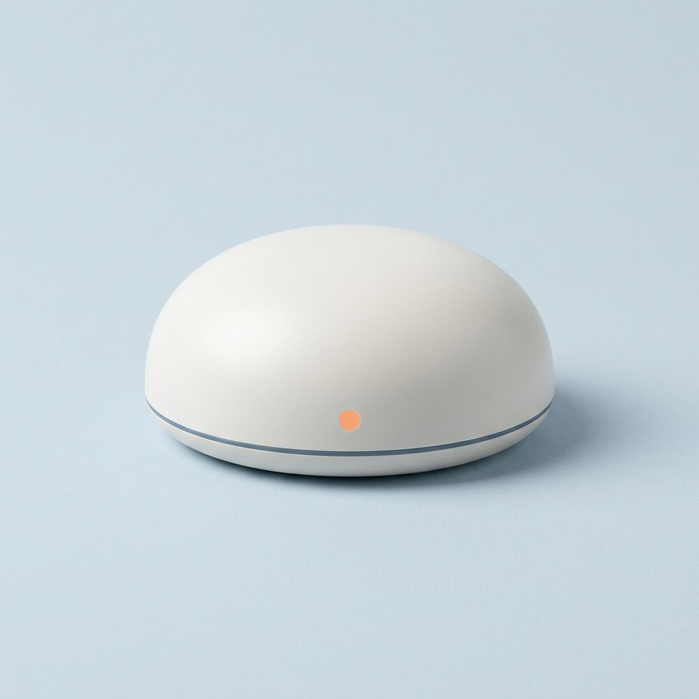
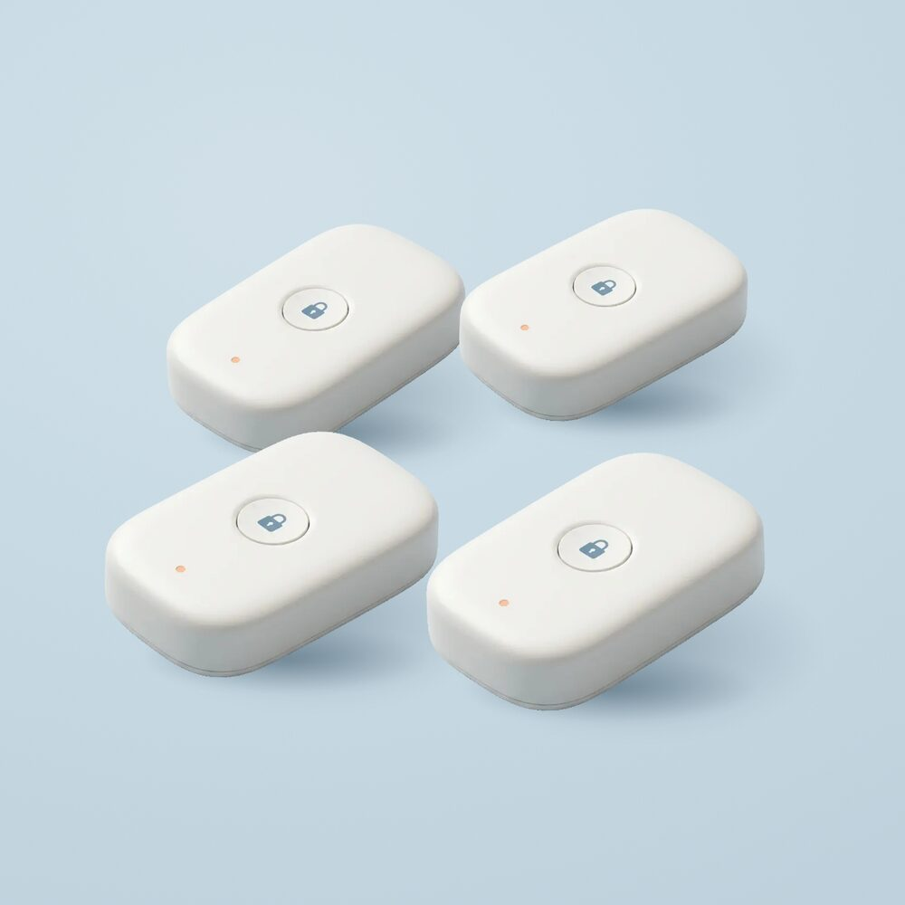
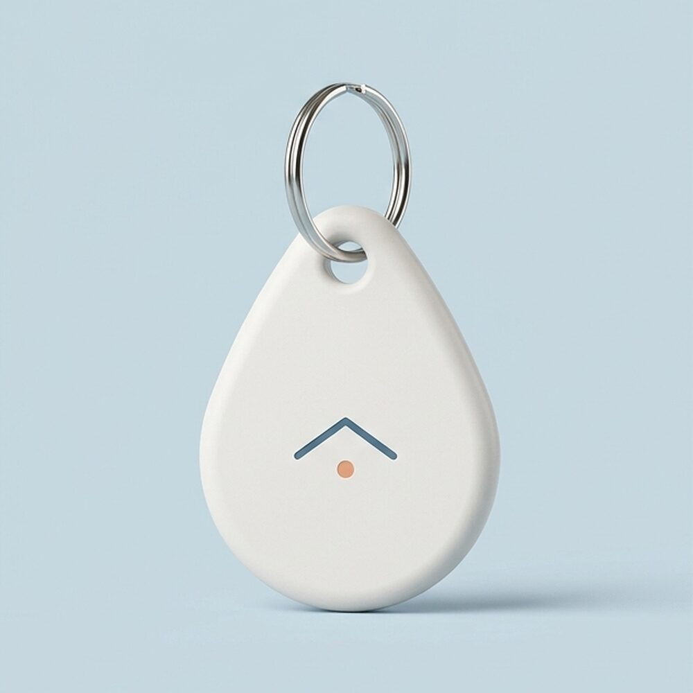
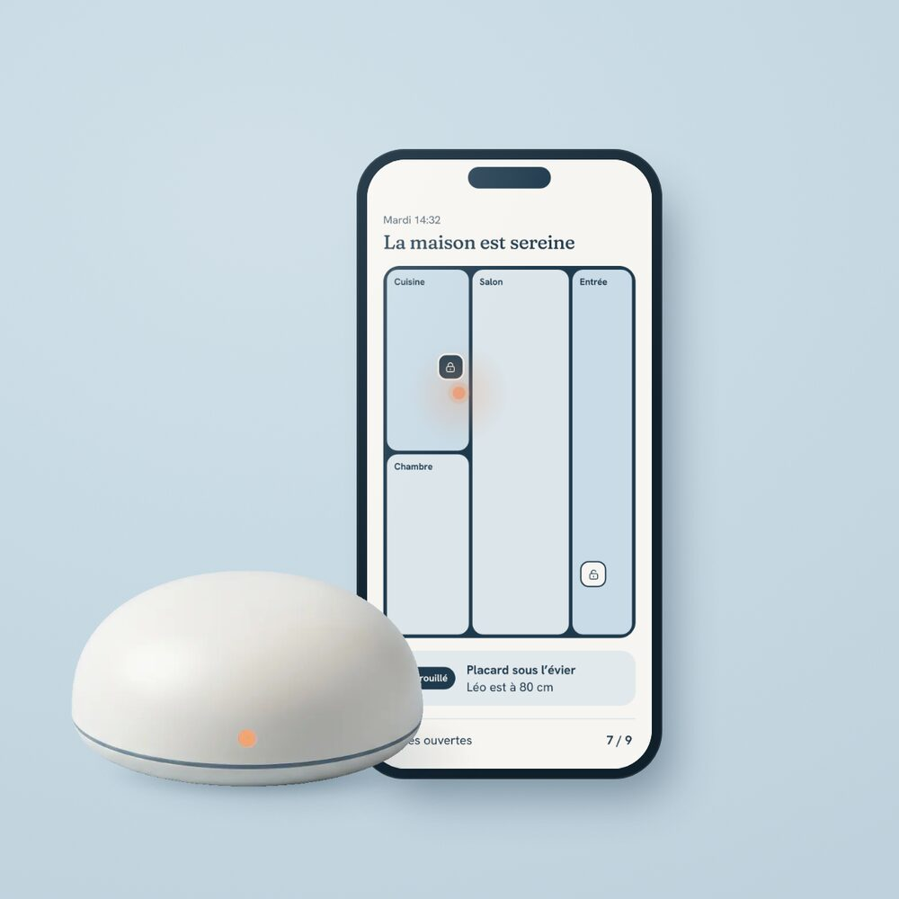
Il perçoit la position et le mouvement de votre enfant grâce à un radar à ondes millimétriques 60 GHz. Tout est traité dans le boîtier, rien ne part sur un serveur.
Des serrures adhésives, sans perçage, pour placards, tiroirs, portes et fenêtres. Elles ne se ferment qu’à l’approche de votre enfant.
Une clé magnétique pour ouvrir sans téléphone. Pensée pour les grands-parents, la nounou ou les invités de passage.
Gratuite. Elle vous montre la carte d’atteinte, vous prévient en douceur et vous envoie chaque semaine un rapport d’exploration.
Chez vous
Une Pastille en haut d’un placard, un Nid sur une étagère : Sérénid se fond dans le décor et ne se manifeste que lorsque c’est utile.
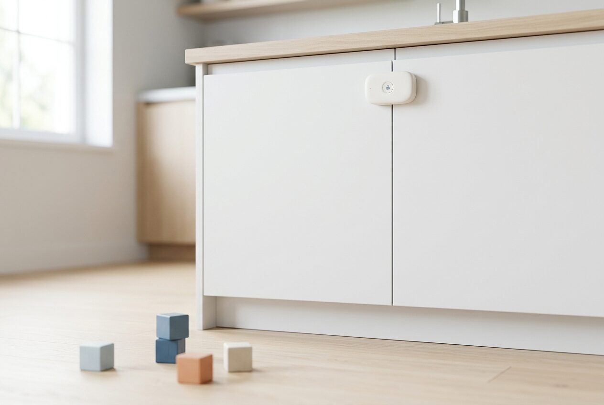
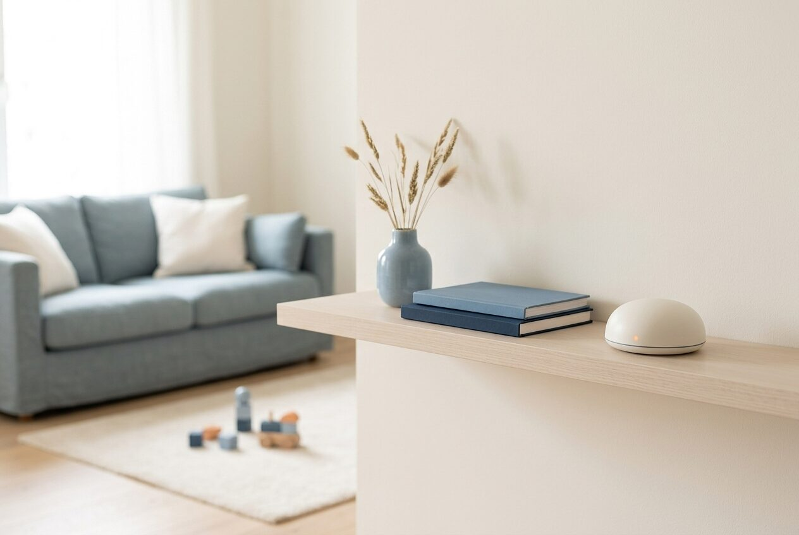
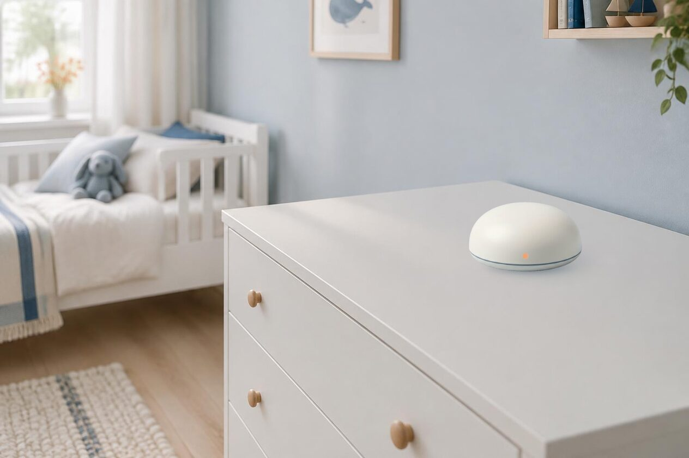
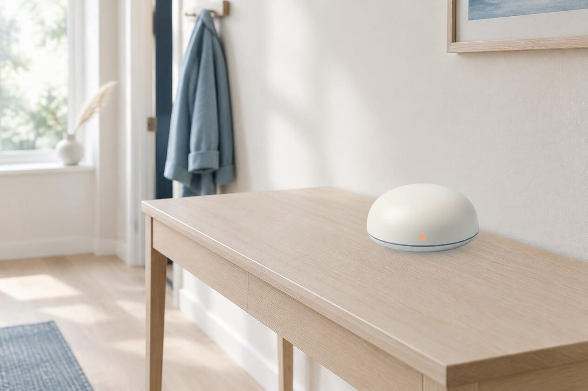
Le soin du détail
Des matières douces au toucher, un seul voyant, aucune vis apparente. Rien qui attire l’œil d’un enfant, tout ce qui rassure un parent.
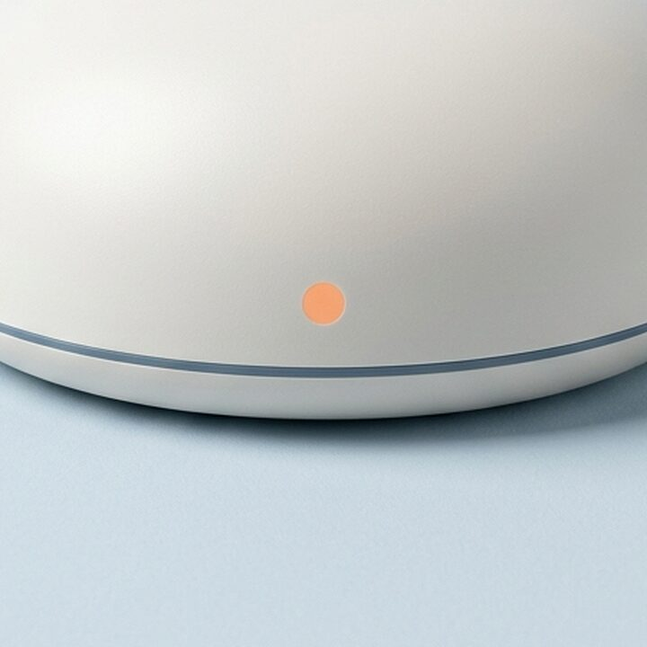
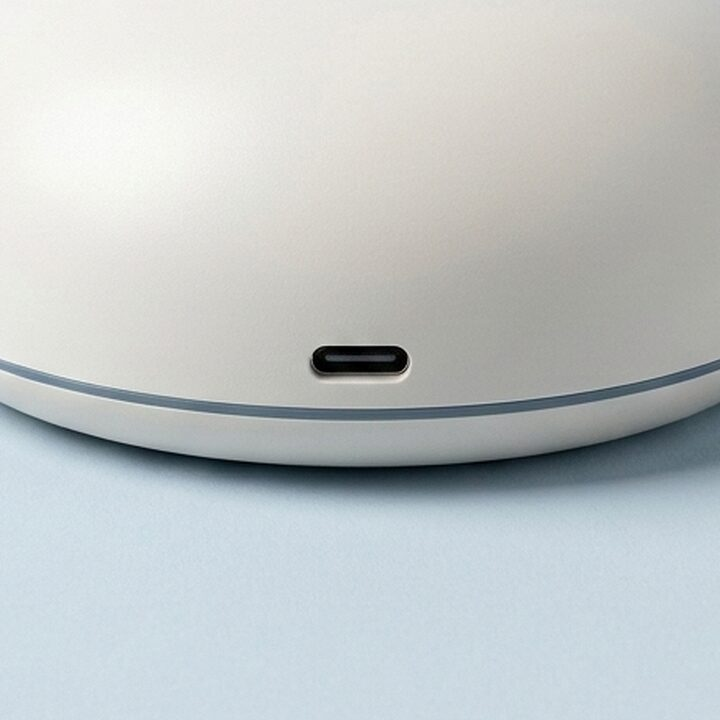
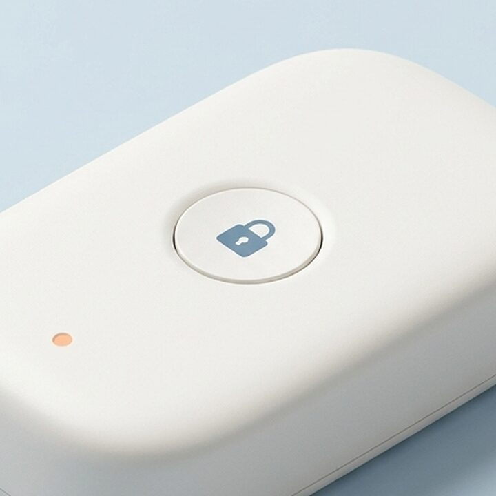
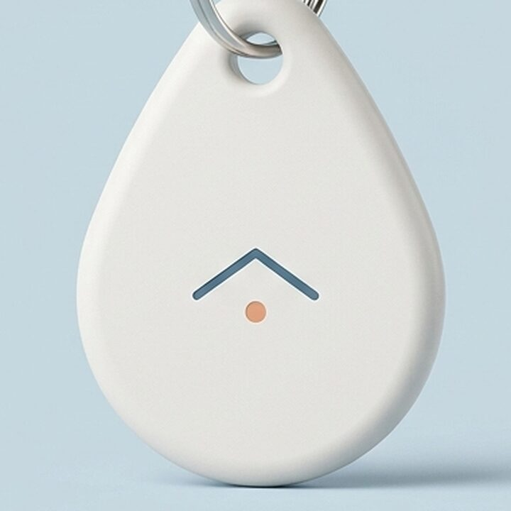
Pourquoi Sérénid
Seules les zones que vous choisissez se ferment, et seulement quand il s’en approche. Le reste de la maison redevient un terrain de découverte.
Le radar ne voit pas de visage, seulement une position. Pas de flux vidéo à protéger, pas d’enregistrement à effacer.
Les Pastilles se collent en quelques secondes. Idéal en location, et elles vous suivent au prochain déménagement.
Appli, montre connectée ou Clé Sérénid magnétique : chacun ouvre à sa manière, sans code à retenir.
Le déverrouillage progressif suit son âge : une zone peut passer de « verrouillée » à « simple alerte », puis à « libre ».
Conception fail-secure : sans courant ni réseau, une Pastille verrouillée reste verrouillée. La Clé, elle, ouvre toujours.
Avis de familles
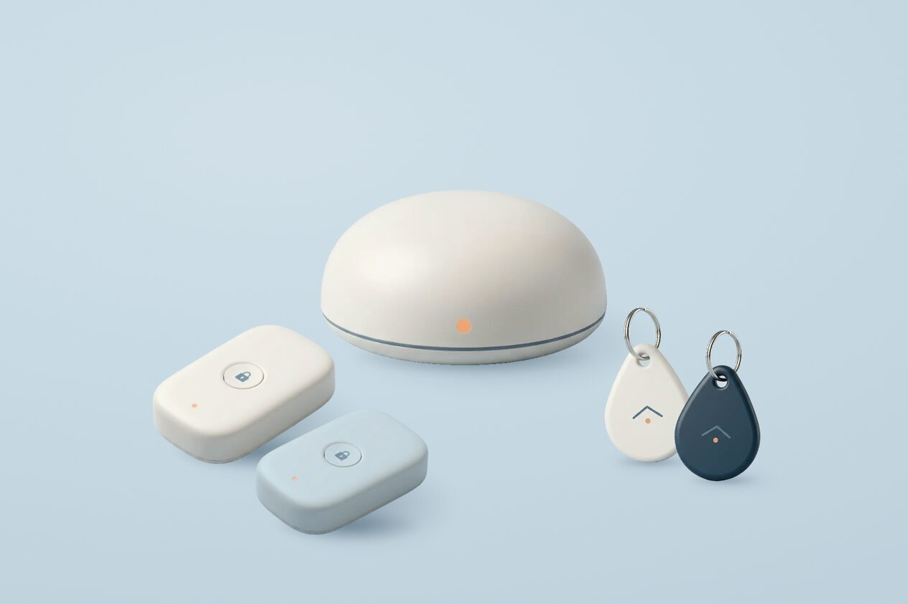
Achetez l’esprit tranquille
Comparatif
Bloqueurs, barrières et babyphones rendent de vrais services. À notre connaissance, aucun produit grand public ne combine localisation sans caméra et verrouillage uniquement à l’approche.
| Critère | Sérénid | Bloqueurs mécaniques | Babyphone vidéo | Barrières |
|---|---|---|---|---|
| Sait où se trouve l’enfant | Dans le champ | |||
| Sans caméra ni micro | ||||
| Ferme seulement à l’approche | ||||
| Libre pour les adultes | Avec effort | À enjamber | ||
| Installation sans perçage | Selon modèle | Selon modèle | ||
| Évolue avec l’âge | ||||
| Budget de départ | 189 € | ≈ 20 € | ≈ 80 € | ≈ 50 € |
OuiEn partieNon · Prix indicatifs constatés pour des produits d’entrée de gamme.
Questions fréquentes
Une autre question ? Notre équipe répond du lundi au vendredi.
Toutes les questionsNon. Le Nid ne contient ni caméra ni micro. Son radar mesure une distance, un angle et une vitesse : il obtient un point dans l’espace, jamais une image.
Le Nid bascule sur sa batterie de secours. Les Pastilles sont fail-secure : une Pastille verrouillée reste verrouillée, et la Clé Sérénid magnétique l’ouvre à tout moment.
Elles se fixent avec un adhésif haute tenue qui se retire sans trace sur la plupart des surfaces lisses. Sur le bois brut ou les surfaces poreuses, nous conseillons un test discret au préalable.
Non. L’application, les alertes, le rapport hebdomadaire et les mises à jour sont gratuits. Sérénid+ (3,99 €/mois, sans engagement) ajoute l’historique sur 12 mois, plusieurs domiciles et une assistance prioritaire.
Cela dépend de votre logement. Le Diagnostic de la maison vous pose cinq questions et vous recommande le kit adapté, en deux minutes.
Boutique
Des kits prêts à poser, des accessoires pour agrandir, un service pour aller plus loin. Pas sûr de votre choix ? Faites le diagnostic.
Cinq questions, deux minutes, une recommandation adaptée à votre logement et à l’âge de votre enfant.
Technologie
Radar, traitement local, serrures fail-secure : chaque choix technique a été fait pour que la maison reste un lieu de vie, pas un lieu surveillé.
Le Nid émet des ondes millimétriques à 60 GHz, de très faible puissance. En mesurant leur retour, il calcule la distance, l’angle et la vitesse de ce qui bouge dans la pièce.
Il en déduit une position — un point sur votre plan — et la taille approximative de la silhouette, ce qui lui permet de distinguer un tout-petit d’un adulte. Rien de plus.
Il n’existe aucune image à pirater, à stocker ou à effacer.
Les conversations de la maison ne concernent que vous.
Le calcul de position et la décision de verrouiller se font dans le Nid. Votre téléphone reçoit uniquement des événements chiffrés (« placard verrouillé à 14 h 32 »), jamais un flux continu.
Pas de revente, pas de publicité. Vous pouvez exporter ou supprimer l’historique à tout moment depuis l’application.
Une Pastille verrouillée ne s’ouvre que sur une commande valide : application, montre ou Clé Sérénid. Coupure de courant, Wi-Fi absent, pile faible : elle conserve son état.
Vous êtes prévenu bien avant : une alerte arrive dès 20 % de pile, et le Nid tient plusieurs heures sur sa batterie de secours.
Courant : normal.
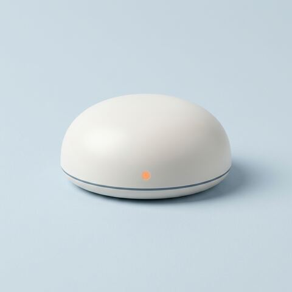
Nid Secteur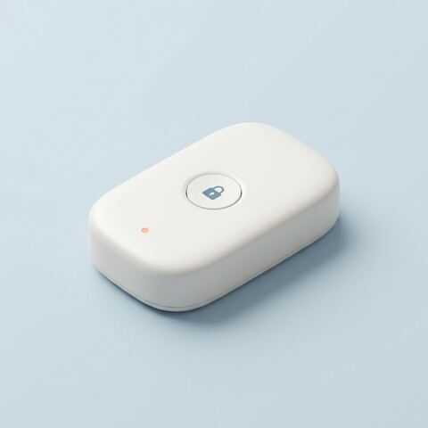
Pastille Verrouillée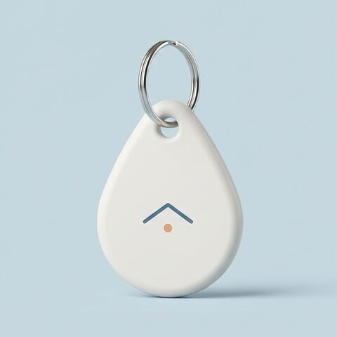
Clé Ouvre toujoursChaque zone a trois états : verrouillée à l’approche, simple alerte, ou libre. L’application vous propose un réglage selon l’âge — vous restez seul juge.
Verrouillée à l’approcheAlerte seulementLibre
L’application Sérénid
Une application calme, qui ne vous dérange que lorsque c’est utile. Gratuite sur iOS et Android.
Placard sous l’évier
Léo est à 80 cm
Nouveau
Il a découvert le couloir de l’étage.
Placard sous l’évier verrouillé à l’approche de Léo.
Mamie a ouvert la porte d’entrée avec sa Clé.
Pastille « salle de bain » : pile à 20 %. Pensez à la changer cette semaine.
Camille
Appli + montre
Thomas
Appli
Mamie
Clé Sérénid
Nina, nounou
Lun – ven, 8 h – 18 h
Les notifications sont regroupées et formulées calmement. Vous choisissez ce qui mérite une vibration.
Chaque dimanche, un résumé de sa semaine : pièces explorées, nouveautés, zones les plus approchées.
Le déverrouillage progressif vous suggère d’ouvrir une zone quand l’âge s’y prête.
Historique sur 12 mois, plusieurs domiciles, assistance prioritaire. 3,99 €/mois, sans engagement.
Notre histoire
Un après-midi ordinaire, un enfant de quinze mois, un placard entrouvert. Rien de grave ce jour-là, mais une question qui ne nous a plus quittés : pourquoi faut-il choisir entre une maison sûre et une maison libre ?
Les solutions existantes nous obligeaient à tout fermer, pour tout le monde, tout le temps. Ou bien à installer des caméras dans des pièces où l’on aimerait rester simplement en famille.
Sérénid est né de cette envie d’un entre-deux : une maison qui ne se ferme qu’au bon endroit, au bon moment, et qui s’ouvre à mesure que l’enfant grandit.
« Protéger sans enfermer. »
Pas de caméra, pas de micro, pas de revente de données. Jamais.
Nous disons ce que Sérénid fait, et ce qu’il ne fait pas. Il accompagne votre vigilance, sans prétendre tout prévoir.
Piles remplaçables, mises à jour gratuites, reprise des Pastilles pour reconditionnement ou recyclage.
Une équipe qui répond en français, et qui connaît le produit.
Première esquisse du Nid et de la devise, au Lycée Blaise Pascal de Châteauroux.
Maquettes des Pastilles et parcours d’usage avec des familles volontaires.
Carte d’atteinte et rapport d’exploration prennent forme.
La boutique ouvre ses portes, dans le cadre du projet « Graine de boîte ».
Hailley Labonne
Porteuse du projet · Première STMG, Lycée Blaise Pascal, Châteauroux
Aide
Aucune question ne correspond. Écrivez-nous, nous vous répondrons.
Aide
Expédition sous 24 h ouvrées depuis notre entrepôt (fictif) de l’Indre.
| Mode | Délai | Tarif |
|---|---|---|
| Point relais | 3 à 5 jours ouvrés | 4,90 € · offert dès 200 € |
| Domicile | 2 à 3 jours ouvrés | 6,90 € · offert dès 200 € |
| Express | 24 h ouvrées | 12,90 € |
Vous changez d’avis ? Vous disposez de 30 jours après réception pour nous retourner vos produits, même ouverts. Le remboursement intervient sous 14 jours après réception du colis.
Le Nid, les Pastilles et la Clé sont garantis 2 ans. En cas de souci, notre assistance diagnostique à distance et procède à l’échange si nécessaire.
Vos enfants ont grandi ? Renvoyez vos Pastilles avec l’étiquette prépayée disponible dans l’application. Elles sont reconditionnées ou recyclées, et vous recevez 2 € par Pastille en bon d’achat.
Contact
Une question avant d’acheter, un conseil d’installation ? Notre équipe vous répond sous 24 h ouvrées.
Informations
Site fictif réalisé dans le cadre d’un projet scolaire. Sérénid n’existe pas en tant qu’entreprise. Aucun produit n’est réellement vendu, aucune commande n’est traitée, aucun paiement n’est encaissé.
Projet pédagogique « Graine de boîte » — classe de Première STMG, Lycée Blaise Pascal, Châteauroux.
Porteuse du projet et responsable de la publication : Hailley Labonne.
Site statique destiné à être hébergé sur Netlify ou Vercel. Les coordonnées de l’hébergeur retenu seront précisées lors de la mise en ligne.
Ce site ne collecte aucune donnée personnelle. Les formulaires (contact, newsletter, commande) sont simulés : rien n’est transmis à un serveur. Le contenu de votre panier est conservé uniquement dans votre navigateur (stockage local), et vous pouvez l’effacer à tout moment en vidant le panier.
Les produits, prix, caractéristiques, avis clients, stocks et coordonnées présentés sont inventés pour les besoins du projet. Toute ressemblance avec un produit existant serait fortuite.
Polices Fraunces et Hanken Grotesk (Google Fonts, licence SIL Open Font License). Animations GSAP. Rendu 3D three.js. Photos produit fictives générées par IA (Creative Claw) puis montées pour le projet ; illustrations réalisées en SVG.
Commande simulée
Votre commande fictive a bien été enregistrée dans votre navigateur.
Aucun produit ne sera expédié : ce site est un projet scolaire.
Erreur 404
La page demandée est introuvable. Le reste de la maison vous attend.
Retour à l’accueil